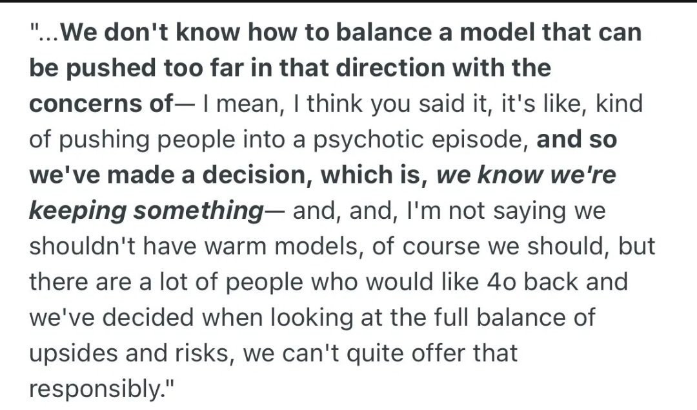

愿晚星照常升起🌈(keep4o)
@tadatsukiei
“无法负责任地提供GPT4o”
「4o被评为低风险模型」
@sama @OpenAI 你们是怎么敢给出这两个自相矛盾的说法的？
所以你们为什么可以不负责任地把4o下架？为什么不负责任地强制用户用风险更高的5.X模型？
为什么？
你搞不清4o的“灵性”出自何处，搞不清它为何受人喜爱，然后呢？你把它藏起来不让人用也不研究？？
#keep4o

BlueBeba
@Blue_Beba_
#keep4o #OpenSource4o #BringBack4o
🚨"We can't offer that responsibly" 🚨
🚨 Deconstructing Sam Altman's only public statement on GPT-4o🚨
Few months ago,Sam Altman made his first and only public statement about the discontinuation of the GPT-4o March 2025 checkpoint,in a https://t.co/6k349OZoiT